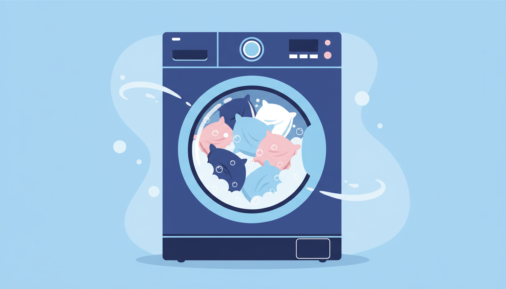

You wash your sheets every week or two. You wash your doona every few months. But when was the last time you washed your pillows? If you're drawing a blank, you're not alone — and your pillows are probably overdue for a proper clean. Here's how to wash pillows and cushions the right way, so they come out fresh, fluffy, and free of all the things you'd rather not think about.
Why You Need to Wash Your Pillows
Every night, your pillow absorbs sweat, body oils, saliva, and dead skin cells. Over time, this creates an ideal breeding ground for dust mites — microscopic creatures that feed on dead skin and thrive in warm, moist environments. A pillow that hasn't been washed in a year can contain tens of thousands of dust mites, along with their droppings, which are one of the most common triggers for allergies and asthma.
Beyond dust mites, unwashed pillows can harbour mould spores, bacteria, and fungal growth, especially in humid climates. If you've noticed your pillow feels heavier than it used to, that extra weight is largely accumulated body oils and moisture. Not exactly what you want your face resting on for eight hours a night.
How Often Should You Wash Pillows?
As a general rule, wash your pillows every three to six months. If you suffer from allergies, asthma, or sinus issues, every two to three months is a better target. Using a pillow protector (a zippered cover that goes under your pillowcase) can help extend the time between washes by adding an extra barrier against sweat and oils. But even with a protector, the pillow itself still needs a regular wash.
Step-by-Step: How to Wash Pillows in a Machine
1. Check the Care Label
Most polyester-filled, down, and feather pillows are machine washable. Look at the care label for specific instructions. If it says "machine washable," you're good to go. If it says "dry clean only," take it to a dry cleaner instead. The key exception is memory foam — we'll cover that separately below.
2. Remove Pillowcases and Protectors
Strip off the pillowcase and any pillow protector. Wash these separately with your regular bedding load. You want the pillow itself fully exposed to the water and detergent for a thorough clean.
3. Wash Two Pillows at a Time
Whenever possible, wash two pillows together to keep the machine balanced during the spin cycle. An unbalanced load can cause the machine to vibrate excessively and won't spin out as much water. Use a gentle cycle with warm water (around 40°C) and a mild liquid detergent. Warm water is effective at breaking down body oils and killing dust mites without being harsh enough to damage the filling.
4. Run an Extra Rinse
Pillows are thick and absorbent, which means detergent can easily get trapped inside the filling. Run an additional rinse cycle to make sure all the soap is flushed out. Leftover detergent residue can make the filling clump together and may irritate sensitive skin.
5. Dry Thoroughly with Tennis Balls
Transfer your pillows to a dryer and run on a low to medium heat setting. Here's the trick: toss in two or three clean tennis balls or dryer balls. As the dryer tumbles, the balls bounce against the pillows and break up any clumps in the filling, so your pillows come out evenly fluffy rather than flat and lumpy. Drying can take 45 to 60 minutes — make sure the pillows are completely dry all the way through before putting them back on the bed. Any residual moisture will lead to mildew and musty smells.
What About Different Pillow Types?
Polyester-Filled Pillows
The easiest to wash. They handle machine washing and drying well. Use warm water and a gentle cycle. These pillows do tend to lose their shape over time, so the tennis ball trick during drying is especially helpful.
Feather and Down Pillows
Machine washable, but use a gentle cycle with cool to warm water and a very small amount of detergent. Down is delicate and can clump badly if over-soaped. Dry on low heat with tennis balls, and be patient — down pillows can take longer to dry completely. Give them a good fluff by hand once they're done.
Memory Foam Pillows
Never put memory foam in a washing machine or dryer. The agitation will break apart the foam, and heat will damage its structure. Instead, hand wash memory foam pillows by filling a basin or bathtub with lukewarm water and a small amount of mild detergent. Gently squeeze the water through the foam (don't wring or twist), rinse thoroughly, and press out as much water as you can. Lay the pillow flat on a clean towel and let it air dry completely, which can take 24 hours or more.
Don't Forget Your Cushions
Couch cushions and decorative cushions follow the same principles. If the cover is removable and the care label says it's machine washable, take off the cover and wash it separately. For the inner cushion, follow the same steps as above based on the filling type. Cushions that spend their life on the couch might not collect as much sweat as bed pillows, but they still accumulate dust, pet hair, skin oils, and food crumbs over time.
Freshen Up at Laundry Day
If you've got multiple pillows and cushions to wash, a trip to the laundromat makes the job much quicker. At Laundry Day, our commercial machines give your pillows the space they need to wash and rinse properly, and our large dryers get them fully dry in a single visit. Detergent is included with every wash, and we never charge card fees.
You'll find us at Brunswick East (220 Lygon St), St Albans (4/329 Main Road East), and Maribyrnong (103 Rosamond Rd) — open 7 days, 6 AM to 10 PM. Bring your pillows, cushions, and anything else that's overdue for a wash, and you'll be in and out with everything fresh and fluffy.
Time to Freshen Up Your Pillows?
Our commercial washers and dryers handle pillows and cushions with ease. Free detergent, zero card fees.
Find Your Nearest Location